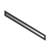

Std Edit Menu/bg

Въведение
Стандартното меню Редактиране е едно от 7-те подменюта в стандартното меню:
Файл Редактиране View Tools Macro Прозорци Помощ
Менюто Редактиране предоставя инструменти за промяна на модела.
Инструменти
В меню Редактиране са налични следните инструменти:
Редът на инструментите съвпада с менюто на версия 26.3.
- Отменя: Отменя едно действие.

- Повтаряне: Повтяря по-рано отменено действие.

- Разане: Копира клетки от електронни таблици към клипборда и ги изчиства.

- Копиране: Копира обекти в клипборда.

- Поставяне: Поставя обекти от клипборда в документа.

- Дублиране на избраното: Дублира обекти в рамките на документа. -- Ако е активирана Работна маса PartDesign вместо това се показва инструмента Duplicate Object.

- Изтриване: Изтрива избраните обекти.

- Преизчисляване: Преизчислява документа.

- Избиране в рамка: Избира обекти от правоъгълна област.

- Избиране на елемент в рамка: Избира поделементи от правоъгълна област.

- Избиране на всичко: Избира всички обекти.

- Трансформиране: Трансформира обект в 3D изглед.

- Разположение: Отваря панел Разположение на панел Задачи за избран обект.

- Align To…: Подравнява обект спрамо фиксиран референтен обект.

- Send to Python Console: Creates variables in the Python Console referencing an object.

- Properties: Displays the Property View panel. introduced in 1.0

- Toggle Edit Mode: Activates or deactivates an object's edit mode.


- Preferences: Opens the Preferences Editor. -- On MacOS this menu option may be located in the FreeCAD menu instead of the Edit menu.

- Create: introduced in 26.3
- New Part: Creates a new part and makes it active.

- New Group: Creates a new group.

- Variable Set: Creates a set of properties that can be used as variables in expressions. introduced in 1.0

- Annotation Label: creates an annotation label at the selected location. introduced in 26.3

- Datums: introduced in 1.1
 Coordinate System: Creates a coordinate system object that can be attached to other objects. introduced in 1.1
Coordinate System: Creates a coordinate system object that can be attached to other objects. introduced in 1.1
- Datum Plane: Creates a datum plane object that can be attached to other objects. introduced in 1.1


Datum Line: Creates a datum line object that can be attached to other objects. introduced in 1.1

- Datum Point: Creates a datum point object that can be attached to other objects. introduced in 1.1

- Link Actions:
- Make Link: Creates a link.

- Make Sub-Link: Creates a sub-object or sub-element link.

- Replace With Link: Replaces object(s) with new link(s).

- Unlink: Replaces link(s) with their linked object(s).

- Import Links: Imports selected external link(s).

- Import All Links: Imports all external link(s).

- Text Document: Creates an object capable of holding text.

Std Base
- File: New Document, Open, Open Recent, Close, Close All, Save, Save As, Save Copy, Save All, Revert, Import, Export,Merge Document, Document Information, Print, Print Preview, Export PDF, Exit
- Edit:
- Miscellaneous: Undo, Redo, Cut, Copy, Paste, Duplicate Object, Delete, Recompute, Box Selection, Box Element Selection, Select All, Transform, Placement, Align To, Send to Python Console, Properties, Toggle Edit Mode, Edit Mode, Preferences
- Create: New Part, New Group, Variable Set, Annotation Label, Text Document
- Datums: Coordinate System, Datum Plane, Datum Line, Datum Point
- Link Actions: Make Link, Make Sub-Link, Replace With Link, Unlink, Import Link, Import All Links
- View:
- Miscellaneous: New 3D View, Orthographic View, Perspective View, Fullscreen, Bounding Box, Toggle Axis Cross, Clipping View, Texture Mapping, Toggle Navigation/Edit Mode, Material, Appearance, Random Color, Appearance per Face, Toggle Transparency, Workbench, Status Bar
- Standard Views: Fit All, Fit Selection, Align to Selection, Isometric, Dimetric, Trimetric, Home, Front, Top, Right, Rear, Bottom, Left, Rotate Left, Rotate Right, Store Working View, Recall Working View
- Freeze Display: Save Views, Load Views, Freeze View, Clear Views
- Draw Style: As Is, Points, Wireframe, Hidden Line, No Shading, Shaded, Flat Lines
- Stereo: Stereo Red/Cyan, Stereo Quad Buffer, Stereo Interleaved Rows, Stereo Interleaved Columns, Stereo Off, Issue Camera Position
- Zoom: Zoom In, Zoom Out, Box Zoom
- Document Window: Docked, Undocked, Fullscreen
- Visibility: Toggle Visibility, Show Selection, Hide Selection, Select Visible Objects, Toggle All Objects, Show All Objects, Hide All Objects, Toggle Selectability
- Toolbars: File, Edit, Clipboard, Workbench, Macro, View, Individual Views, Structure, Help, Lock Toolbars
- Panels: Tree View, Property View, Model, Selection View, Python Console, Report View, Tasks, DAG View
- Overlay Docked Panel: Toggle Overlay for All Panels, Toggle Transparent Panels, Toggle Overlay, Toggle Transparent Mode, Bypass Mouse Events in Overlay Panels, Toggle Left, Toggle Right, Toggle Top, Toggle Bottom
- Link Navigation: Go to Linked Object, Go to Deepest Linked Object, Select All Links
- Tree View Actions: Sync View, Sync Selection, Sync Placement, Preselection, Record Selection, Single Document, Multi Document, Collapse/Expand, Initiate Dragging, Go to Selection, Selection Back, Selection Forward
- Tools: Addon Manager, Measure, Clarify Selection, Quick Measure, Units Converter, Load Image, Save Image, View Turntable, Scene Inspector, Dependency Graph, Export Dependency Graph, Document Utility, Edit Parameters, Customize
- Macro: Record Macro, Macros, Recent Macros, Execute Macro, Attach to Remote Debugger, Debug Macro, Stop Debugging, Step Over, Step Into, Toggle Breakpoint
- Help: What's This, Start Page, Users Documentation, FreeCAD Forum, Report an Issue, Restart in Safe Mode, Developers Handbook, Python Modules Documentation, FreeCAD Website, Donate to FreeCAD, About FreeCAD
- Getting started
- Installation: Download, Windows, Linux, Mac, Additional components, Docker, AppImage, Ubuntu Snap
- Basics: About FreeCAD, Interface, Mouse navigation, Selection methods, Object name, Preferences, Workbenches, Document structure, Properties, Help FreeCAD, Donate
- Help: Tutorials, Video tutorials
- Workbenches: Std Base, Assembly, BIM, CAM, Draft, FEM, Inspection, Material, Mesh, OpenSCAD, Part, PartDesign, Points, Reverse Engineering, Robot, Sketcher, Spreadsheet, Surface, TechDraw, Test Framework
- Hubs: User hub, Power users hub, Developer hub